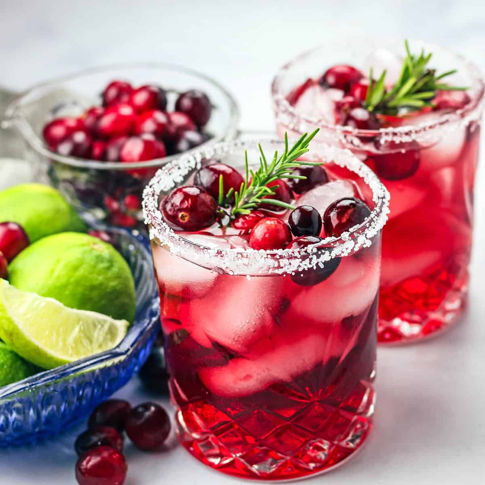

Mistletoe Margarita

Description
These easy Mistletoe Cranberry Margaritas are the perfect big batch
cocktail to serve at any of your holiday parties and festivities. They're
perfect to make ahead, so you're not stuck playing bartender at your next
holiday party. They will be a huge hit, and your guests will marvel at how
pretty and eye-catching these Christmas margaritas are.
Ingredients
- 4 cups cranberry juice
- 1 1/2 cups blanco tequila
- 1/2 cup lime juice
- 1/2 cup fresh whole cranberries
- (Optional) Lime wedges and rosemary sprigs for garnsh
- (Optional) Salt or sugar for rims
Instructions
-
(Optional) Put the cranberries in the freezer and freeze until
firm.
-
Add the cranberry juice, tequila and lime juice to a pitcher at least
1/2 gallon in size. Stir well.
- Add ice and/or cranberries.
-
Serve in cocktail glasses with salt or sugar rims and any lime or
rosemary garnishes.